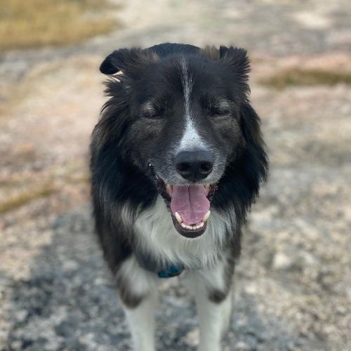
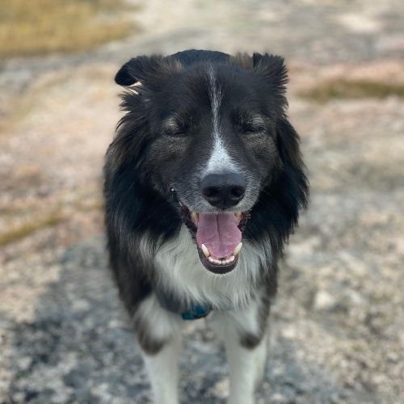
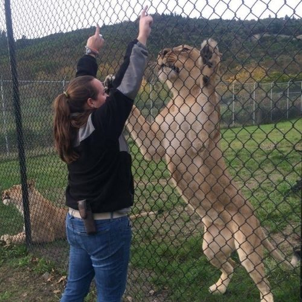
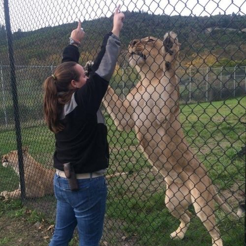

Food Truck Finder Github
*Front-End Capstone for NSS
Food Truck Finder is a React application that utilizes JSON server for data storage and the Reacstrap and MUI libraries for additional styling.
- Users can find, engage with, and keep track of their favorite food trucks in Nashville.
- Truck owners can register and manage the details and schedule information for their trucks.


 
